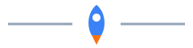
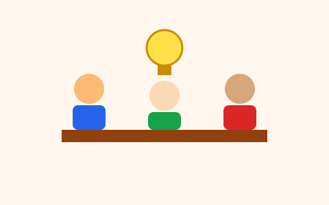

Startup em Foco
Um site para quem quer entender como uma startup nasce, cresce e conta a sua história para investidores e clientes.
Aviso: todos os nomes, números e endereços deste site são fictícios e foram criados para um trabalho escolar.

O que é uma startup
Startup é uma empresa nova que tenta resolver um problema real com uma ideia que pode crescer rápido. Ela começa pequena, testa a ideia com poucas pessoas e só depois investe para ganhar escala.

Startup não é só tecnologia
Existem startups de saúde, educação, alimentação e agricultura. O que as define é o modelo de negócio, e não o setor.
Do primeiro rascunho ao mercado
Cada startup segue um caminho próprio, mas a maioria passa por estas etapas, nesta ordem:
- Identificar um problema que incomoda muita gente.
- Montar um protótipo simples, o MVP.
- Testar com os primeiros clientes e ajustar.
- Apresentar o resultado a investidores em um pitch.
- Crescer para novas cidades ou novos públicos.
O que você encontra neste site
- Sobre: conceitos básicos e um pequeno glossário.
- Dados: uma tabela com startups fictícias de um programa de aceleração.
- Formulários:
- Navegação por teclado, com link para pular direto ao conteúdo.
Tem uma ideia? Vá para o formulário de cadastro do Demo Day e inscreva a sua.